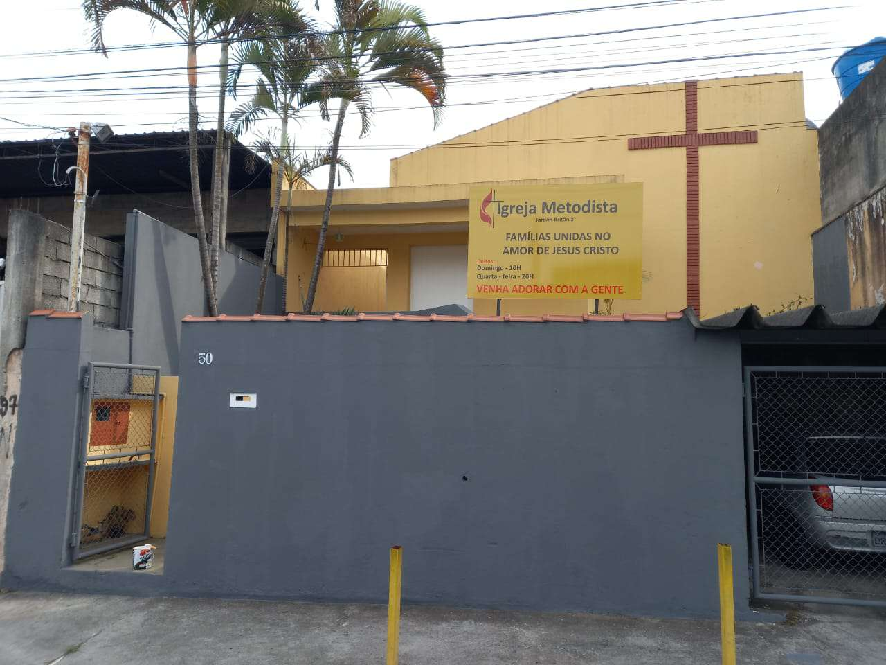

Igreja Metodista Jardim Britânia
Metodismo foi um movimento de avivamento espiritual cristão ocorrido na Inglaterra do século XVIII que deu origem a Igreja Metodista em 1739 e enfatizou a relação íntima do indivíduo com Deus, iniciando-se com uma conversão pessoal e seguindo uma vida de ética e moral cristã.
A Congregação Metodista em Jardim Britânia é filiada a da Igreja Metodista da Lapa, nossa fundadora, Atualmente somos liderados pelo Pastor Sergio Roberto Souza.
Somos uma familia, em compromisso na obra do Senhor, dedicamos nosso cultos para adoração, exaltação e louvor do nosso Deus e trabalhamos na inclusão da comunidade desenvelvendo eventos para crianças, jovens, homens e mulheres.
| Dias | Horarios | Tipo |
|---|---|---|
| Quarta-Feira | 20h | Presencial/Online |
| Sexta-Feira | 20h | Online |
| Domingo | 10h | Presencial/Online |
Endereço
R. Domenico Aspari, 50 - Jardim Britânia, São Paulo - SP, 05269-010 (Proximo ao terminal Jardim Britânia)
